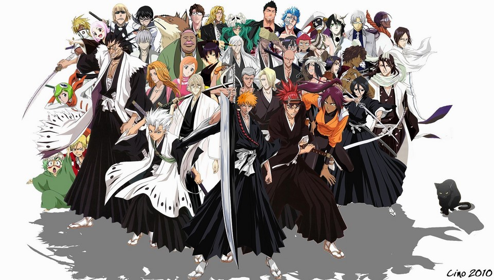

<DOCTYPE html>
<html lang = "ja">
<head>
<meta charset="utf-8">
<meta name=”viewport” content=”width=device-width,initial-scale=1.0″>
<title> BLEACH</title>
<link rel="stylesheet" href="bleach.CSS">
<style>
body{
  padding: 60px;
  margin:  60px;
  background-image: url("3ec862b93a8e4d199b13b6d2d25f3470.jpg");
  background-repeat: no-repeat;
  background-attachment: fixed;
  background-size: cover;
}


</style>
</head>
<body>

<h1 align="center">あらすじ</h1> 
<br><h2  align="center"> 
<br>家族を守るために悪霊・虚（ホロウ）を退治する死神になってしまった高校生・黒崎一護とその仲間達の活躍を描く。
<br>主な舞台となるのは東京にある架空の町・空座町（からくらちょう）。初期の死神代行篇は、自身に死神の力を与えた死神
<br>の少女・朽木ルキアを相棒に、一護が虚絡みの騒動に巻き込まれていきながらも解決にあたるエブリデイ・マジック的要素
<br>もあったが、尸魂界篇以降はその要素は失せ、敵対勢力とのバトル中心のストーリーを展開する。</br>

</body>

</html>